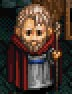
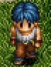
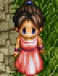

(Complete)
(ETERNAL)
銀のハーモニカを無くしてしまい、困っている。
たまにレアと遊んでいる。
姿を見られるのはゲーム中で一度きり。
サラ＝トバの所にはよく行っていたらしい。
ETERNAL だけ「ミラー」に耐性がある。
アドルが銀の盾をサルモン神殿で発見すると、それを彼に譲った。

どんな夢を見ているのでしょうか。
リーボルに襲われたとき、ロダの樹に逃げ込み、重傷を負わずにすんだ。
(Complete)
(ETERNAL)
目次 > ゲームについて > 日本Falcom 攻略 > Ys > キャラクター一覧 > ミネアの町
らんの眼
Ys(イース) Ys Eternal(VE)/Ys Complete
| 概要 | 情報 | ボス戦 |
| 敵キャラ一覧 | アイテム一覧 | 攻略チャート |
| 地図 | ダウンロード | イースの本 |
| 経験値表 | 地名一覧 | タイムアタック |
| ETERNAL / Complete 比較 | キャラクター一覧 | |
| Ys 攻略へ | 目次へ戻る |
| [ バルバド ] [ ミネア ] [ ゼピック ] [ その他 ] |
| 名前 (Complete) |
名前 (ETERNAL) |
画像 | 備考 |
| プリム | 女の子 | サラ＝トバの所へはよく遊びに行っていたらしい。 | |
| ハンス | 男の人 | ピムの取引所で交渉に失敗したらしい。 | |
| ファナ | 女の人 | バギュ＝バデッドに盗賊の砦があることを知っている。 | |
| レア | レア | いつの頃からかミネアの町に現れた吟遊詩人。 銀のハーモニカを無くしてしまい、困っている。 |
|
| アーシェル | 男の子 | 鉱夫の兄が、魔物に襲われて大けがをしたらしい。 たまにレアと遊んでいる。 |
|
| クラーゼ | クラーゼ | けが人がいれば、魔物がいるにも関わらずゼピック村まで行くすごい人。 姿を見られるのはゲーム中で一度きり。 |
|
| リサ | 看護婦 | クラーゼの病院に勤める看護婦。 サラ＝トバの所にはよく行っていたらしい。 ETERNAL だけ「ミラー」に耐性がある。 |
|
| マッシュ老人 | 老人 | 何者かに襲われ、代々伝わる銀の盾を盗まれた。 アドルが銀の盾をサルモン神殿で発見すると、それを彼に譲った。 |
|
| ケイン | 男の人 | |
クラーゼの病院の患者。リーボルに襲われている夢でうなされている。 |
| ブロン | 男の人 | 「デヘヘ、まいったなあ」という寝言を言っている患者。 どんな夢を見ているのでしょうか。 |
|
| セオドア | 男の人 | クラーゼ病院の患者。 リーボルに襲われたとき、ロダの樹に逃げ込み、重傷を負わずにすんだ。 |
|
| 名前 (Complete) |
名前 (ETERNAL) |
画像 | 備考 |
| 名前 (Complete) |
名前 (ETERNAL) |
画像 | 備考 |
| ユリウス | 男の人 | ミネアの町でたびたびマントをまとった男(ダルク＝ファクト)を見かけ、危険視していた。 | |
| オーマン | オーマン | ミネアの町にある酒場の主人。 盗賊による被害を見て、盗賊狩りをするべきと主張している。 |
|
| ギャレック | ギャレック | 幻の「ロダの実」を食べたがっているが、アドルが現物を見せると「存在を確かめられたたけでも十分だ」と、食べようとしなかった。 | |
| ドニス | ドニス | 母ちゃん(本人談)にプレゼントするために買った「サファイヤの指輪」を無くし、やけ酒をしていた。 ”母ちゃん”が母親なのか、奥さんなのかは不明。 |
|
| フランツ老人 | 老人 | サラ＝トバと交友のあった老人。 ダルク＝ファクトによりサラが殺されたことを知り、彼女から譲り受けた「イースの本」をアドルに渡した。 |
|
| チェスト | 男の子 | エステリアの観光ガイドをする少年。 魔物が現れる直前にラーバのガイドをしていたが、最近見かけないので心配している。 |
|
| 鉱夫ダグ | 男の人 | 酒場でひたすら酒を飲んでいる男。 鉱山の魔物を一掃したいが、自分ではどうしようもないので、酒をあおっている。 |
|
| セザール | 男の人 | 酒場でひたすら酒を飲んでいる人。 ゲーム中、唯一関西弁をしゃべる。 どうやらFalcom の社員の一人がモデルになっているらしい。 |
|
| リカルド | 男の人 | レアの美貌とハーモニカの演奏を絶賛している男の人。 バギュ＝バデッドを見る彼女の雰囲気に気圧されて、声をかけ損ねたらしい。 |
|
| ハリスン老人 | 老人 | ラスティン村から逃げてきた一家の一人。 アドルがヴァジュリオンを倒したことを知り、彼に「これで殺された村人の魂も救われるだろう」と感謝の言葉を贈った。 |
|
| シャーロット | 女の人 | ラスティン村から逃げてきた一家の一人。 村が滅ぼされたことをひたすら嘆いている。 |
|
| 名前 (Complete) |
名前 (ETERNAL) |
画像 | 備考 |
| 名前 (Complete) |
名前 (ETERNAL) |
画像 | 備考 |
| エピ | 女の子 | ETERNAL では魔物に村を滅ぼされたトラウマからか家から出たがらない設定。 Complete では村が滅ぼされたことを知らず、帰りたがっている女の子という設定。 |
|
| マルセル町長 | 町長 |  | ミネアの町の町長さん。 ミネアの町で次々に起こる問題に頭を抱えている。 |
| パメラ | 町長夫人 | マイセル町長の夫人。 町長と同じように町で起こる問題に頭を抱えている。 |
|
| ヘイスタック | 男の人 |  | ダームの塔を見ると背筋が冷たくなるのを不思議がっている。 また、ダームの塔が魔物により造られたことを知らない。 |
| オーロラ | 女の人 |  | 嵐の結界により物の値段が上がっているのを嘆いている。 |
| ロゼッティ | ロゼッティ | ミネアの町で武器屋を経営する男性。 どうやらディオスと同じ部屋で寝ているらしい。 |
|
| ディオス | ディオス | ミネアの町で防具屋を経営する男性。 年齢からしてディオスの息子かもしれない。 |
|
| ベテル老人 | 老人 | クラーゼの腕と正義感をたたえる老人。 サラ＝トバの死をジェバに伝えに行ったアドルに感謝の言葉を言った。 |
|
| リディア | 女の人 | 年上が好みのタイプの女性。 町で見かけたダルク＝ファクトに一目惚れする。冒険を重ね、たくましくなったアドルにも好意を示すが、年下のため評価は低いかった。 同居しているのでベテル老人の娘らしい。 |
|
| ルッカ | 男の子 | 祖母から聞いた「銀の剣」の話が大好きな少年。 その「銀の剣」「を持ったアドルに、尊敬のまなざしを向けた。 |
|
| サラ＝トバ | サラ＝トバ | 蘇ったイースの災いから人々を解放する英雄の到来を待ちわびていた占い師。 ゼピック村にいるジェバとは(おそらく)姪の関係にあたる。 アドルに探すように頼んでいた「イースの本」を見る前に、ダルク＝ファクトに殺されてしまう。 |
|
| 名前 (Complete) |
名前 (ETERNAL) |
画像 | 備考 |
| 名前 (Complete) |
名前 (ETERNAL) |
画像 | 備考 |
| コーネル | 男の人 | サラ＝トバが不吉な予言をするのを不思議がっていたが、サラが殺されて以降はエステリアの将来を本気で心配し始めた。 | |
| バンゴア親方 | 親方 | ドニスの上司に当たる人物。 彼が仕事に来ないので探しているらしい。 |
|
| シャルム | 女の人 | ミネアの町の頑丈な城壁がなぜ存在したのかを不思議に思っている。 | |
| マーサ | 女の人 |  |
魔物が出るので、子供(ヨハン)に外で遊ぶのを禁止したが、この閉塞的な生活に本人も参っている様子。 |
| フレディ | 男の人 | バルバドの港に住むダリア婆さんの息子で、彼女がかたくなにバルバドから離れようとしないことに困っている。 | |
| ヨハン | 男の子 | フレディの息子。 魔物が出る前はロダの樹に登り遊んでいたらしい。 |
|
| ピム | ピム | 売り物だった銀の鎧や金の台座を何者かに盗まれて起こっているが、落ちていた「サファイヤの指輪」を売り物にしてしまうあたり、盗賊とさして変わらないような気がする人物。 | |
| タビサ | 女の人 |  |
ゼピック村の村長の娘で、彼が最近悩みを抱えていることを知り、相談に乗ってくれるようアドルに頼んだ。 |
| バック | 男の人 | もとは鉱夫だったらしい。 | |
| 踊り子ニケ | Complete で新たに追加されたキャラ。 オーマンの酒場で踊り子をやっており、日に日に暮らしにくくなるエステリアを嘆いている。 |
||
| 名前 (Complete) |
名前 (ETERNAL) |
画像 | 備考 |
| [ バルバド ] [ ミネア ] [ ゼピック ] [ その他 ] |
| 概要 | 情報 | ボス戦 |
| 敵キャラ一覧 | アイテム一覧 | 攻略チャート |
| 地図 | ダウンロード | イースの本 |
| 経験値表 | 地名一覧 | タイムアタック |
| ETERNAL / Complete 比較 | キャラクター一覧 | |
| ページの上部へ | Ys 攻略へ | 目次へ戻る |